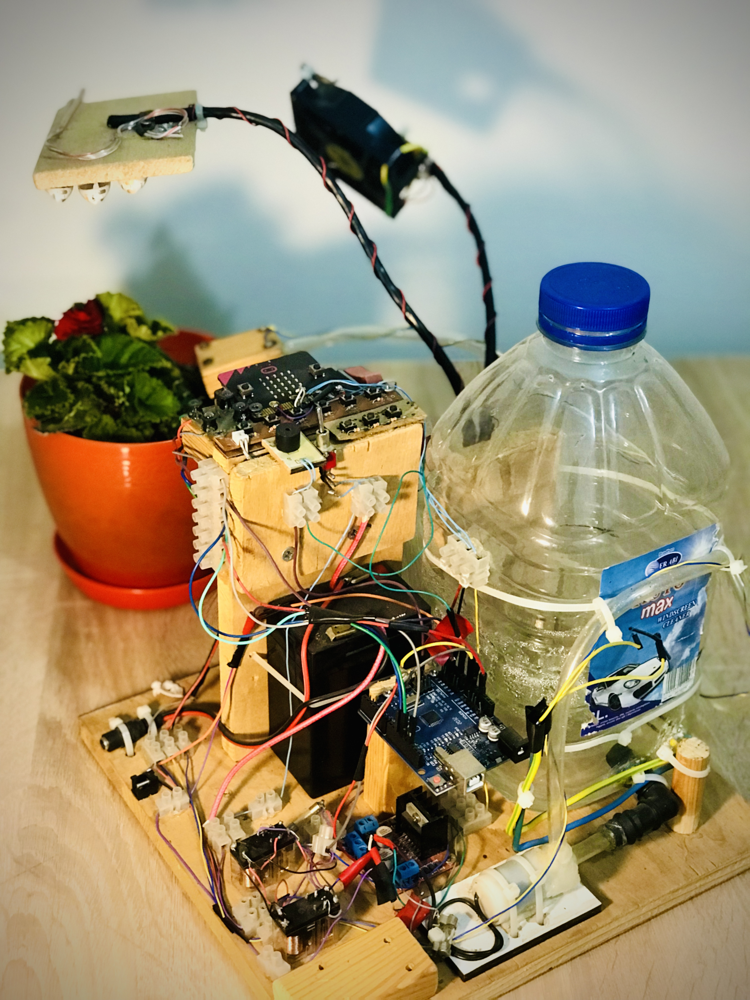
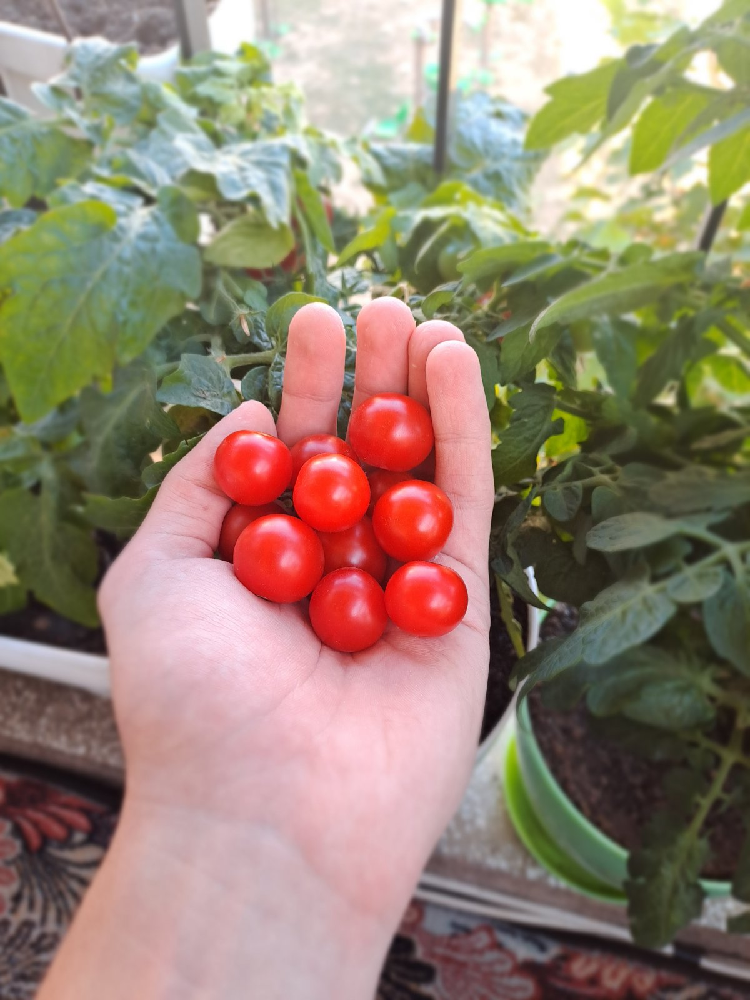
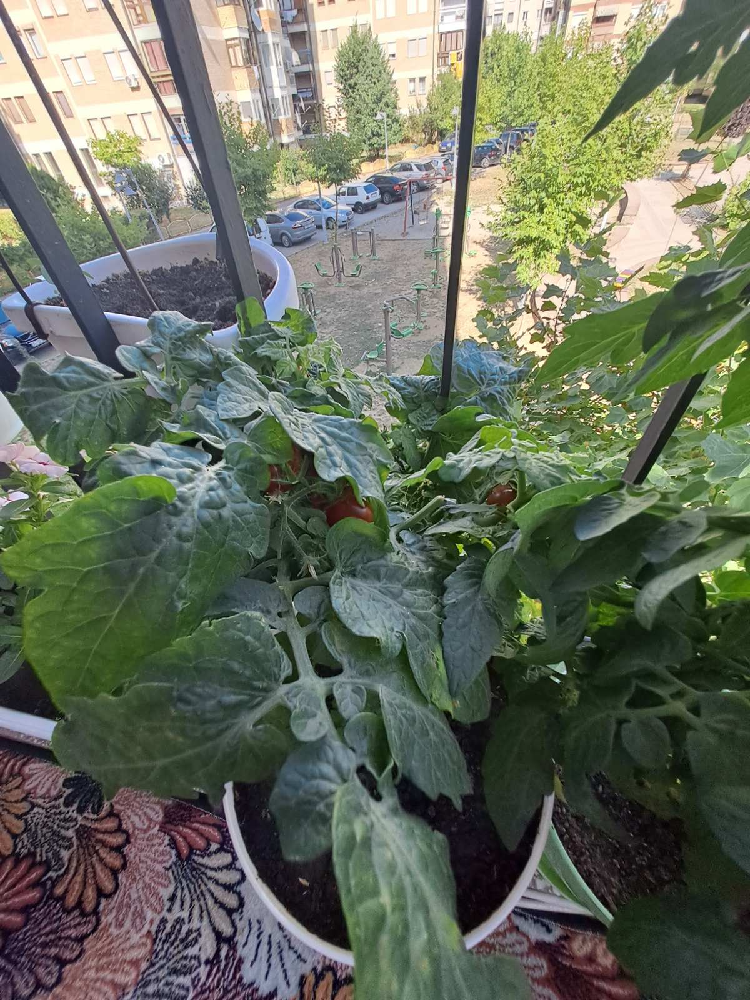

My first robotics project, "Plant Breeder ATC" which I worked on for seven months, and won 1 place in the "21 st Century Schools" competition in 2021 that was organised in Western Balkan. "Plant Breeder ATC" is a robotic device that can fulfill all the needs of a plant🌱 that contains various systems for different tasks and enabling the growth of a plant in a dark room regardless of the season. It ensures the efficient growth of the plant by using different sensors, algorithms, and automatic watering💦, solar☀️, and ventilation💨 systems. The device is powered either through an adapter or an internal battery. The water tank should be filled for the irrigation system to work. After providing the necessary information about the plant to the device and making adjustments through the control panel, the process begins. After a certain period of time the growth of the plant can be observed.
In this video you see the tomato I grew for 46 days with the "Plant Breeder": ------- DEC 2022
After 46 days, the weather started to warm up and I took it out to the balcony. It continued to grow under the sun.
 